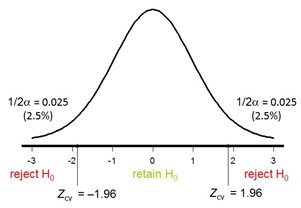

2 Lab 1: Introduction
2.1 Assignment 1: Hypothesis Testing - Formulating Hypotheses
Discuss with your portfolio group the logic behind hypothesis testing, and how it relates to your personal (and group’s) research interests.
Consider the following three research descriptions. Formulate H0 and H1 in words. Discuss your answers with your group members.
Researchers want to know whether it matters for test performance if an exam is completed on a computer or using paper and pencil. Hence, the research question reads: Is there an effect of the type of administration (computer or paper and pencil) on the test performance?
What would be the H0 and HA for this study?
This appears to be an undirected hypothesis about a mean difference for two independent samples, without a clearly specified alternative hypothesis. Thus, we could state:
\(H_0: \mu_{computer} = \mu_{paper}\) \(H_A: \mu_{computer} \neq \mu_{paper}\)
Researchers want to know whether the alcohol consumption among Dutch students differs from the alcohol consumption in the general Dutch population. Using CBS statistics, they know that in the general population the average alcohol consumption is 5.6 glasses a week. The question is whether the average alcohol consumption among students is different from this national average.
What would be the H0 and H1 for this study?
This appears to be an undirected hypothesis about the difference between a mean and a hypothesized value, without a clearly specified alternative hypothesis. Thus, we could state:
\(H_0: \mu = 5.6\) \(H_A: \mu \neq 5.6\)
Researchers want to study whether social isolation is associated with income.
What would be the H0 and H1 for this study?
This appears to be an undirected hypothesis about an association between two variables, without a clearly specified alternative hypothesis. We could thus state:
\(H_0: \rho = 0\) \(H_A: \rho \neq 0\)
Formulating the hypothesis is an important very first step in hypotheses testing. Continue with the next assignment, in which we will go through the steps of a hypothesis test.
2.2 Assignment 2: Test Statistics, Alpha and Significance
In this assignment we will go through the steps of a hypothesis test.
While going through the steps we will come across the most important concepts related to hypothesis testing.
For the next steps, we consider the following situation:
Suppose we are interested in the personality profile of musicians; that is, we want to know whether, on average, personality characteristics of musicians differ from those of the general population. For now, we’ll only focus on Openness. We pretend that we have collected data among 25 musicians using a validated scale for which previous research has shown that in the general population the scores are normally distributed with mean 50 and SD 15. It is our task to test whether the mean of Openness for musicians differs from the mean in the general population. To keep things simple, we assume that in the population of musicians the SD is the same as in the general population; that is, we assume that LaTeX: \(\sigma = 15\).
Let openness be the variable of interest. Let \(\mu_{musicians}\) represent the mean openness in the population of musicians. The hypothesis test amounts to testing:
\(H0: \mu_{musicians} = 50\)
\(H1: \mu_{musicians} \neq 50\)
Now, when we do the hypothesis test, we seek for evidence against the null hypothesis. More specifically, our testing procedure starts with the assumption that H0 represents the truth and as long as we don’t have convincing evidence that our assumption is false we stick to that assumption.
The question is, however, when do we have convincing evidence against H0?
Finding evidence against H0 works as follows:
If H0 is true, we expect mean values close to H0. And, if we observe a mean value that is much different from the value under H0, we have convincing evidence against H0. If this happens, we reject H0 as representing the truth and accept the alternative hypothesis, H1.
Hypothesis testing fits Popper’s philosophy of falsification. He introduced this well-known analogy to explain the logic of falsificationism:
- Suppose we assume that all Swans are white, \(H_0: Swans = white\)
- We would then not expect to observe black ones.
- If we do observe black swans, our initial hypothesis is called into question.
- The number of white swans we see (= observations consistent with the hypothesis) does not provide evidence for \(H_0\), because there could always be a black swan out there we haven’t observed yet.
So, the next questions are:
What are the sample values we can expect under H0? When is evidence “convincing” enough? To answer the first question we have to go back to sampling distributions!
For the second question, we need a criterion. We have to realize that even if H0 is true, sample values can be far off just by sampling fluctuations (i.e., by chance). The common criterion is: if the observed value is among the 5% most unlikely samples under H0 (i.e. if H0 is true), we reject the null hypothesis.
Let’s go back to our example about musicians.
Let X be openness. Under H0 we assume that X is normally distributed with mean 50 and SD equal to 15.
What are the mean and standard deviation of the sampling distribution of the mean under H0 given that the sample size is 25? And what do we call the standard deviation of the sampling distribution?
(Use what you have learned in the previous lectures. Hint: first make a drawing of the situation, then do the computations).
Sampling distribution:
- Mean: \(\mu = 50\)
- Standard error ( =SD of sampling distribution!): \(\sigma_\bar{X} = \frac{15}{\sqrt{25}}= 3\)
Suppose we want to indicate sample means that are unlikely if H0 would be true. In particular, we want to know how far the sample mean must be from the hypothesized mean to be among the 5% of all possible samples under H0 that are furthest away from the hypothesized means.
What should the value of the sample mean be to fall within the 5% most deviant samples if the sample size is 25?
We are talking about the distribution of the mean; so we need to work with the sampling distribution. We want to know the cut offs that mark the 2.5% highest and 2.5% lowest means. We first have to find the Z-values: they are 1.96 for the highest 2.5%, and (by symmetry) -1.96 marks the 2.5% lowest.
Hence, to be among the 5% of all possible sample means that are most unlikely under H0, the sample mean should be:
larger than 50+1.96 x 3 = 55.88 or smaller than 50-1.96 x 3 = 44.12
Let’s do some more exercises on the Z-test.
Suppose the mean for Openness we found in our sample was 59.
If we use a significance level of 5%, would we reject the null hypothesis?
In the previous step we used cut offs for the sample means to decide about significance. The cut off scores were obtained via the Z-distribution. However, doing all these computations is not necessary (there’s a shortcut!!). In fact, if we know the Z-value for the sample, we can easily find out if the sample is among the 5% of the most unlikely sample means. We only have to compare the value with 1.96 and -1.96 to see whether that is the case.
In this course, we will use Z-values for different purposes. In these specific calculations, Z is used as a Test Statistic. A test statistic quantifies evidence against the null hypothesis. In this case, the Z test statistic expresses how far away from the mean under the null hypothesis the observed mean is, in terms of the number of standard errors.
The Z test-statistic follows the standard normal distribution. The values 1.96 and -1.96 are called the critical values and they mark the 5% most unlikely sample means under H0. In other words, the critical values mark the reject region for H0.
So, if we compute the Z-value for the sample mean, and if that sample value of Z falls in the rejection region, we reject H0 (we found something that is unlikely enough to no longer believe H0 is true). If H0 is rejected we speak of a significant result. See the graph below:

Following these steps to test a mean is one example of performing a “Z-test”!
We can use the Z-test to test hypotheses about the population mean if we know the population \(\sigma\).
The test statistic for the Z-test is:
\(z = \frac{\bar{X}-\mu_{H_0}}{\sigma_\bar{X}}\)
This statistic is computed using the mean from the sample, the hypothesized mean under H0 and \(\sigma\).
H0 is rejected at the 5% significance level if z is either larger than 1.96 or smaller than -1.96.
So far, we rejected the null hypothesis if the sample is among the 5% most unlikely sample means under H0. This 5% was called the significance level, and is denoted as \(\alpha = .05\). However, we could just as well choose 1% or .5%.
What would be the critical values for the Z-test if one tests at \(\alpha = .01\)?
What would be the critical values for the Z-test if one tests at \(\alpha = .5\%\)?
For historical reasons, social scientists tend to use \(\alpha = 0.05\) as a default. So in this course, if alpha is not explicitly stated, assume \(\alpha = 0.05\).
When we test hypotheses we reject H0 if the sample we find is unlikely if H0 is true. However, the flip side is that, even though H0 is true, we may find a sample that is much different by chance, and erroneously reject H0. Or, in other words, we could make an error. Rejecting H0 while it is true in reality is called a Type I error!
Consider the following:
- If H0 is true, and you test at \(\alpha = 0.05\), what is the probability of committing a Type I error?
- What is the link between the \(\alpha\)-level and type I error rate?
If H0 is really true (i.e., H0 should not be rejected), then the probability that the sample mean is among the 5% most unlikely is equal to 5%.
The alpha level specifies the risk of a Type I error. So if one tests at an alpha level of .05, it means that one accepts a risk of 5% to commit a Type I error.
Properties of the Z-test:
Used to test hypotheses about the mean in a population, assuming \(\sigma\) known.
The test-statistic equals \(z = \frac{\bar{X}-\mu}{\sigma_{\bar{X}}}\)
The test statistic is normally distributed.
2.3 Assignment 3: Z-test
In this assignment we will apply the Z-test.
This assignment first presents an example, followed by two practice questions.
A researcher wants to test \(H_0: \mu = 50\) against \(H_1: \mu \neq 50\)
Data are available from a random sample of 26 respondents. The mean was 53.7. The researcher assumes the SD in the population is 8.5. Perform all steps of the Z-test.
Step 1: Formulate hypotheses
\(H_0: \mu = 50\) \(H_1: \mu \neq 50\)
Step 2: Compute test statistic
Standard error: \(\frac{8.5}{\sqrt{26}}=1.667\)
Test statistic: \(z = \frac{53.7-50}{1.667}=2.212\)
Step 3: Decide about significance
\(\alpha = .05\), so critical values +/- 1.96.
Our test statistic exceeds this critical value.
The sample mean thus falls in the rejection region, and we should conclude that the test is significant so \(H_0\) s rejected.
Step 4: Draw conclusion
We have convincing evidence that the population mean differs from 50.
A researcher wants to test whether the population mean is equal to 80. Data are available from a random sample of 60 respondents. The mean was 74. The researchers assume the SD in the population is 40. Perform and report all steps of the Z-test. What is the resulting p-value?
A researcher wants to test whether the population mean is equal to 500. Data are available from a random sample of 75 respondents. The mean was 546. The researchers assume that the SD in the population is 200. Perform all steps of the Z-test. Use \(\alpha = .01\). Perform and report all steps.
Step 1: Hypotheses: \(H_0: \mu=500\), \(H_1: \mu \neq 500\)
step 2: Compute Statistic:
- standard error: \(\frac{200}{\sqrt{75}} = 23.094\)
- test statistic: \(z = \frac{546-500}{23.094}=1.992\)
Step 3: Decide about significance.
Z does not exceed +/- 2.576. This means that Z does not fall in the reject region when tested at the 1% significance level. The test is not significant.
Step 4: Draw conclusion
\(H_0\) is not rejected.
2.4 Quiz
“The null and alternative hypothesis are deduced from the data.”
“When performing a hypothesis test, we start by assuming \(H_0\) is true.”
“If we reject \(H_0\) with \(\alpha=0.05\), then we will also reject it at \(\alpha=0.10\), assuming all other quantities are held constant.”
The critical values of \(\alpha =0.05\) are +/- 1.96. Hence, if \(H_0\) is rejected it means that z in the sample is larger than 1.96 or smaller than -1.96.”
The critical values of \(\alpha =0.1\) are +/- 1.645. This means that for rejecting \(H_0\) at this alpha level, that z should be larger than 1.645 or smaller than -1.645. That is implied by the fact that it exceeds +/- 1.96.
“If we reject \(H_0\), then \(H_0\) is surely wrong.”
We should always be aware of the possibility of making a Type I error. The probability of making a Type I error is equal to \(\alpha\).
“Increasing the sample size n (and holding all the rest constant) decreases the probability of a Type I error.”
Increasing the sample size n (and holding all the rest constant) does not decrease the probability of a Type I error.
The Type I error is determined by the alpha level.
If our sample is among the 5% most unlikely sample means of all possible sample means with the same size under \(H_0\), whatever that sample size N may be.
Increasing the sample size n (and holding all the rest constant) does not decrease the probability of a Type I error.
2.5 Assignment 4: Z-test and Alpha-levels
In this assignment we will practice some more with the Z-test, meanwhile we will review important concepts of hypothesis testing. In particular, we will look at significance levels.
To test hypotheses, we need to specify the “significance level”, usually denoted by \(\alpha\). The significance level is our decision criterion to reject H0.
The most common choice is .05. But what does this criterion exactly entail?
Discuss with your group what an \(\alpha\) level entails.
If we test at an \(\alpha\) of .05 it means that we are willing to reject H0 in favor of H1 if our sample mean belongs to the 5% most extreme scores (2.5% in each tail) under the null hypothesis.
If indeed the sample mean is among this 5%, it means that we have observed a sample in a range that is quite unlikely if the null hypothesis would be true and, therefore, justifies rejection of the null hypothesis.
In the previous assignments you already used the critical values for the Z-test for specific alpha levels.
For two-tailed tests, it holds that if the absolute value of Z exceeds the critical value, we may reject \(H_0\).
Let \(Z_\text{crit}\) be the critical value. For the Z-test it holds that:
- \(Z_\text{crit} = 1.65\), if \(\alpha = 0.10\) (two-tailed)
- \(Z_\text{crit} = 1.96\), if \(\alpha = 0.05\) (two-tailed)
- \(Z_\text{crit} = 2.58\), if \(\alpha = 0.01\) (two-tailed)
2.6 Quiz
Researchers want to test whether \(\mu=70\). They assume that \(\sigma = 10\). Researchers found a mean of 72 in a random sample of 40 persons.
True or false:
\(H_0\) can be rejected at one of the three levels discussed above (\(\alpha = .10, .05, .01\).
“If the two-tailed test is significant at the 5% level, it will also be significant at the 1% level (keeping everything else fixed).”
“If the two-tailed test is not significant at the 10% level, it won’t be significant at the 5% level either (keeping everything else fixed).”
“If the two-tailed test is not significant at the 5% level, it could still be significant at the 5% level (keeping everything else fixed).”
“If the two-tailed test is significant at the 1% level, it might not be significant at the 5% level (keeping everything else fixed).”
2.7 Assignment 5: P-values
We will now focus on the interpretation of the p-values and how to use the p-values to decide about significance.
Consider the following situation:
Scores on a test measuring confidence in police are normally distributed in the general population, with \(\mu = 500\) and an \(\sigma = 50\). Researchers want to know if the average confidence level is different for those who have been a victim of crime. They collect data for 60 victims. They find a sample mean of 511. They test \(H_0: \mu = 500\) against \(H_1: \mu \neq 500\), while assuming that the population variance is \(\sigma = 50\).
Compute the p-value. Draw a graph for the two-tailed p-value. Write down in your own words and as precise as possible the interpretation of the p-value in the answer box below. Then, discuss your response with your group.
- The p-value represents the proportion of all possible sample means that are further away from our hypothesized mean than the observed sample mean is.
- We have the sampling distribution with \(\mu = 500\) and \(\sigma_\bar{X} = \frac{50}{\sqrt{60}} = 6.455\).
- First, we compute the right-tail area: \(P(\bar{X} > 511) = P(Z > 1.70) = 0.0446\).
- Hence, 4.66% of all possible samples is further away from \(H_0\) on the right side.
- Second, we compute the left-tail area. These are the sample means that are more than 11 points from the hypothesized mean to the left \(P(\bar{X} < 489) = P(Z < -1.70) = 0.0446\).
- Hence, the two-tailed p-value is 0.0892.
Is the test significant at the 5% level?
Is it significant at the 1% level?
Researchers test whether \(\mu = 90\). They assume that \(\sigma=21\). The sample mean was 85. Sample size was 50.
What is the two-tailed p-value?
What is the highest level at which the test is significant?
Researchers test whether \(\mu = 35\). They assume \(\sigma =16\). The sample mean was 38. Sample size was 64.
Compute the two-tailed p-value and indicate which of the following statements is true.
Consider these true- or false statements:
If a two-tailed p-value is .0567 then the test is significant at the 10% level but not at the 5% level.
If a two-tailed test is significant at the 5% level but not at the 1% level, then the two-tailed p-value will be less than 0.01.
A two-tailed p-value of 0.060 indicates that we have 6% chance that the null hypothesis is true.